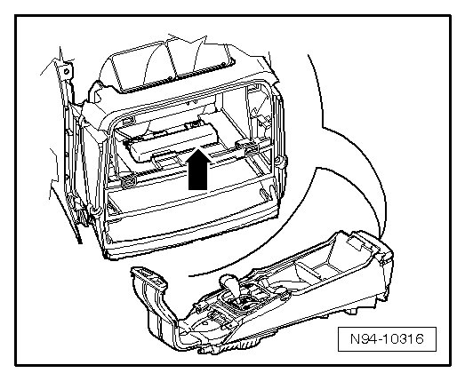
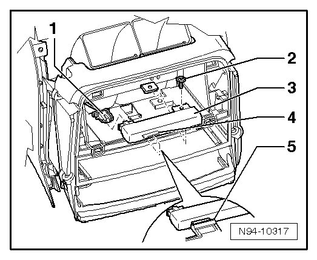

Interior Access/Start Authorization Antenna 2
Access/Start Authorization Antennas and Sensors
Interior Access/Start Authorization Antenna 2
Interior Access/Start Authorization Antenna 2 (R139) - arrow - is located in front portion of center console.

• No coding, basic setting or adaptation is necessary if Interior Access/Start Authorization Antenna 2 (R139) is replaced.
Removing
- Switch off ignition, switch off all electrical consumers and remove ignition key.
- Depending on equipment, remove either Rear A/C Control Head (Climatronic) (E265) --> Heating, Ventilation and Air Conditioning 87 Removal and Installation, or front portion of center console
- Disconnect connector - 1 - for Interior Access/Start Authorization Antenna 2 (R139) - 3 -.

- Remove bolt - 2 -.
- Guide retaining tab - 4 - for Interior Access/Start Authorization Antenna 2 (R139) - 3 - out of mount - 5 -.
Installing
Install in reverse order of removal.